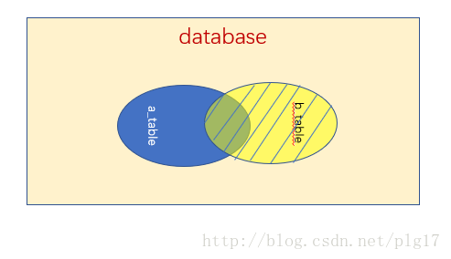

数据库基础
数据库类别
关系型数据库
关系型数据库模型是把复杂的数据结构归结为简单的二元关系（即二维表格形式）。在关系型数据库中，对数据的操作几乎全部建立在一个或多个关系表格上，通过对这些关联的表格分类、合并、连接或选取等运算来实现数据库的管理。
包括：Mysql、Oracle、DB2、Sqlserver
非关系型数据库
NoSQL是非关系型数据库的广义定义，如下小结：
NOSQL不是否定关系数据库，而是作为关系数据库的一个重要补充。
NOSQL为了高性能、高并发而生，忽略影响高性能、高并发的功能。
NOSQL典型产品memcached（纯内存），redis（持久化缓存），mongodb（面向文档）
键值存储数据库（key-value）
键值数据库就类似传统语言中使用的哈希表。可以通过key来添加、查询或者删除数据库，因为使用key主键访问，所以会获得很高的性能及扩展性。
键值数据库主要使用一个哈希表，这个表中有一个特定的键和一个指针指向特定的数据。Key/value模型对于IT系统来说的优势在于简单、易部署、高并发。
典型产品：Memcached、Redis、MemcacheDB:
列存储（Column-oriented）数据库:
列存储数据库将数据存储在列族中，一个列族存储经常被一起查询的相关数据，比如人类，我们经常会查询某个人的姓名和年龄，而不是薪资。这种情况下姓名和年龄会被放到一个列族中，薪资会被放到另一个列族中。
这种数据库通常用来应对分布式存储海量数据。
典型产品：Cassandra、HBase
面向文档（Document-Oriented）数据库:
文档型数据库的灵感是来自于Lotus Notes办公软件，而且它同第一种键值数据库类似。该类型的数据模型是版本化的文档，半结构化的文档以特定的格式存储，比如JSON。文档型数据库可以 看作是键值数据库的升级版，允许之间嵌套键值。而且文档型数据库比键值数据库的查询效率更高。
面向文档数据库会将数据以文档形式存储。每个文档都是自包含的数据单元，是一系列数据项的集合。每个数据项都有一个名词与对应值，值既可以是简单的数据类型，如字符串、数字和日期等；也可以是复杂的类型，如有序列表和关联对象。数据存储的最小单位是文档，同一个表中存储的文档属性可以是不同的，数据可以使用XML、JSON或JSONB等多种形式存储。
典型产品：MongoDB、CouchDB
图形数据库
图形数据库允许我们将数据以图的方式存储。实体会被作为顶点，而实体之间的关系则会被作为边。比如我们有三个实体，Steve Jobs、Apple和Next，则会有两个“Founded by”的边将Apple和Next连接到Steve Jobs。
典型产品：Neo4J、InforGrid
关系型和非关系型数据库区别
关系型数据库最典型的数据结构是表，由二维表及其之间的联系所组成的一个数据组织。
优点：
- 易于维护：都是使用表结构，格式一致；
- 使用方便：SQL语言通用，可用于复杂查询；
- 复杂操作：支持SQL，可用于一个表以及多个表之间非常复杂的查询。
缺点：
- 读写性能比较差，尤其是海量数据的高效率读写；
- 固定的表结构，灵活度稍欠；
- 不能满足高并发读写需求，传统关系型数据库来说，硬盘I/O是一个很大的瓶颈。
非关系型数据库严格上不是一种数据库，应该是一种数据结构化存储方式的集合，可以是文档或者键值对等。
优点：
- 格式灵活：存储数据的格式可以是key,value形式、文档形式、图片形式等等，使用灵活，应用场景广泛，而关系型数据库则只支持基础类型。
- 速度快：nosql可以使用硬盘或者随机存储器作为载体，而关系型数据库只能使用硬盘；
- 高扩展性；
- 成本低：nosql数据库部署简单，基本都是开源软件。
缺点：
- 不提供sql支持，学习和使用成本较高；
- 无事务处理；
- 数据结构相对复杂，复杂查询方面稍欠。
Innodb和MyIASM：
区别：
- MyIASM是非事务安全的，而InnoDB是事务安全的
- MyIASM锁的粒度是表级的，而InnoDB支持行级锁
- MyIASM不支持外键，InnoDB支持外键
- MyIASM支持全文类型（FullText）索引，而InnoDB不支持全文类型索引
- MyIASM保存了表的行数，InnDB没有保存表的行数
- MyIASM相对简单，效率上要优于InnoDB，小型应用可以考虑使用MyIASM
应用场景：
- InnoDB用于事务处理，具有ACID事务支持等特性，如果在应用中执行大量insert和update操作，应该选择InnoDB
- MyIASM管理非事务表，提供高速存储和检索以及全文搜索能力，如果再应用中执行大量select操作，应该选择MyIASM
- 对于一般的Web应用来说，应该选择MyIASM，效率更高，特定场景再用InnoDB
数据库三大范式：
第一范式（1NF）
即表中的列的具有原子性，不可再分解，即列的信息，不能分解, 只要数据库是关系型数据库(MySQL/oracle/db2 /SQL server)，就自动的满足1NF。数据库表的每一列都是不可分割的原子数据项，而不能是集合，数组，记录等非原子数据项。如果实体中的某个属性有多个值时，必须拆分为不同的属性。通俗理解即一个字段只存储一项信息。
第二范式（2NF）
第二范式（2NF）是在第一范式（1NF）的基础上建立起来的，即满足第二范式（2NF）必须先满足第一范式（1NF）。第二范式（2NF）要求数据库表中的每个实例或行必须可以被唯一地区分。为实现区分通常需要我们设计一个主键来实现。
第三范式（3NF）
满足第三范式（3NF）必须先满足第二范式（2NF）。简而言之，第三范式（3NF）要求一个数据库表中不包含已在其它表中定义的非主键字段
事务
满足ACID条件：原子性、一致性、隔离性、持久性
原子性：一个事务中的所有操作，要么全部完成，要么全部不完成
一致性：在事务开始之前和结束后，数据库的完整性没有被破坏
隔离性：数据库允许多个并发事务同时对其数据进行读写和修改的能力，隔离性可以防止多个事务并发执行时由于交叉执行而导致数据的不一致。
持久性：事务结束之后，事务的结果是持久性的，即使断电结果也能保存下来
事务处理主要方法：
- 用BEGIN、ROLLBACK、COMMIT实现，BEGIN开始一个事务、ROLLBACK事务回滚、COMMIT事务确认
- 直接用SET来改变MySQL的自动提交模式，SET AUTHCOMMIT=0禁止自动提交、SET AUTHCOMMIT=1开启自动提交
隔离级别
Read Uncommitted
读未提交就是其他事务做到一半还未提交的数值可以被读出来
脏读：事务可以读取未提交的数据
Read Committed
读已提交就是读取其他事务提交后的数值，比如B事务修改了某数据后还没有提交的话，A事务看到的值仍然是修改之前的数值。
可避免脏读的发生
Repeatable Read
可重复读就是在开始读取数据（A事务开启）时候，即使其他事务修改了数据，但A事务读到的数据不管读几次都是不变的
可避免脏读、不可重复读的发生：不可重复读是指在对于数据库中的某个数据，一个事务范围内多次查询却返回了不同的数据值，这是由于在查询间隔，被另一个事务修改并提交了
幻读：可重复读可能产生幻读，A事务开始准备插入一条记录id=6，B事务同时开始并成功插入一条记录id=6，此时A执行插入id=6操作，结果插入失败，因为id=6记录已经存在，这就是幻读。Innodb通过多版本并发控制(MVCC)解决了幻读问题。
Serializable
读加共享锁，写加排他锁
以上四种隔离级别最高的是Serializable级别，最低的是Read uncommitted级别，当然级别越高，执行效率就越低。像Serializable这样的级别，就是以锁表的方式（类似于Java多线程中的锁）使得其他的线程只能在锁外等待，所以平时选用何种隔离级别应该根据实际情况。在MySQL数据库中默认的隔离级别为Repeatable read（可重复读）。
事务回滚机制
事务是用户定义的一个数据库操作序列，这些操作要么全做要么全不做，是一个不可分割的工作单位，事务回滚是指将该事务已经完成的对数据库的更新操作撤销。
要同时修改数据库中两个不同表时，如果它们不是一个事务的话，当第一个表修改完，可能第二个表修改过程中出现了异常而没能修改，此时就只有第二个表依旧是未修改之前的状态，而第一个表已经被修改完毕。而当你把它们设定为一个事务的时候，当第一个表修改完，第二表修改出现异常而没能修改，第一个表和第二个表都要回到未修改的状态，这就是所谓的事务回滚
锁
数据库是一个多用户使用的共享资源。当多个用户并发地存取数据时，在数据库中就会产生多个事务同时存取同一数据的情况。若对并发操作不加控制就可能会读取和存储不正确的数据，破坏数据库的一致性。
加锁是实现数据库并发控制的一个非常重要的技术。当事务在对某个数据对象进行操作前，先向系统发出请求，对其加锁。加锁后事务就对该数据对象有了一定的控制，在该事务释放锁之前，其他的事务不能对此数据对象进行更新操作。
锁分类：
- 按操作划分：DML锁，DDL锁
- 按锁的粒度划分：表级锁、行级锁、页级锁
- 按锁级别划分：共享锁、排他锁
- 按加锁方式划分：自动锁、显示锁
- 按使用方式划分：乐观锁、悲观锁
悲观锁：顾名思义，就是很悲观，每次去拿（取）数据的时候都认为别人会修改，所以每次在拿（取）数据的时候都会上锁，这样别人想拿这个数据就会block（阻塞）直到它拿到锁。传统的关系型数据库里边就用到了很多这种锁机制，比如行锁，表锁等，读锁，写锁等，都是在做操作之前先上锁。
悲观锁优缺点：悲观并发控制(悲观锁)采用”先取锁再分”的保守策略，为数据处理提供了安全的保证。但在效率方面，加锁机制会产生额外的开销，增加产生死锁的机会。
乐观锁：乐观锁的机制就是CAS，版本保护就是CAS中的期望值 CAS顾名思义，就是很乐观，每次去拿（取）数据的时候都认为别人不会修改，所以不会上锁，但是在更新的时候会判断一下在此期间别人有没有去更新这个数据，可以使用版本号等机制。乐观锁适用于多读的应用类型，并发量不是很高的时候可以用，并发量高时，比如抢票，数据就存在Redis这类内存中了，就不存mysql了，mysql太慢了。
乐观锁优缺点：乐观锁认为事务直接竞争的概率是很小的，在提交的时候才锁定，所以不会产生死锁。但是如果两个事务同时写入数据库的某一行，这时，就会发现乐观锁的弊端。
行级锁：行级锁分为共享锁和排它锁。行级锁是Mysql中锁定粒度最细的锁。InnoDB引擎支持行级锁和表级锁，只有在通过索引条件检索数据的时候，才使用行级锁，否就使用表级锁。行级锁开销大，加锁慢，锁定粒度最小，发生锁冲突概率最低，并发度最高
表级锁：表级锁分为表共享锁和表独占锁。表级锁开销小，加锁快，锁定粒度大、发生锁冲突最高，并发度最低
页级锁：页级锁是MySQL中锁定粒度介于行级锁和表级锁中间的一种锁。表级锁速度快，但冲突多，行级冲突少，但速度慢。所以取了折衷的页级，一次锁定相邻的一组记录。BDB支持页级锁。开销和加锁时间界于表锁和行锁之间；会出现死锁；锁定粒度界于表锁和行锁之间，并发度一般。
排它锁(exclusive locck)：排它锁又叫写锁，如果事务T对A加上排它锁，则其它事务都不能对A加任何类型的锁。获准排它锁的事务既能读数据，又能写数据。
共享锁(share lock)：共享锁又叫读锁，如果事务T对A加上共享锁，则其它事务只能对A再加共享锁，不能加其它锁。获准共享锁的事务只能读数据，不能写数据。
InnoDB：支持行级锁和表级锁，默认是行级锁
MyISAM &Memory：这两个存储引擎都是采用表级锁
锁优化：
- 读写分离
- 分段加锁
- 减少锁持有的时间
- 多个线程尽量以相同的顺序去获取资源
Innodb多版本并发控制（MVCC）
可以认为MVCC是行级锁的一个变种，但是它在很多情况下避免了加锁操作，因此开销更低。虽然实现机制所有不同，但大都实现了非阻塞的读操作，写操作也只锁定必要的行。
InnoDB的MVCC，是通过在每行纪录后面保存两个隐藏的列来实现的。这两个列，一个保存了行的创建时间，一个保存了行的过期时间，（存储的并不是实际的时间值，而是系统版本号）。每开始一个新的事务，系统版本号都会自动递增。事务开始时刻的系统版本号会作为事务的版本号，用来和查询到的每行纪录的版本号进行比较。
MYSQL索引类型
MySQL目前主要有以下几种索引类型：普通索引、唯一索引、主键索引、组合索引、全文索引。
- 普通索引：仅加速查询
- 唯一索引：加速查询 + 列值唯一（可以有null）
- 主键索引：加速查询 + 列值唯一（不可以有null）+ 表中只有一个
- 组合索引：多列值组成一个索引，专门用于组合搜索，其效率大于索引合并
- 全文索引：对文本的内容进行分词，进行搜索
普通索引-是最基本的索引，它没有任何限制。它有以下几种创建方式：
1 | 直接创建索引 |
唯一索引-与前面的普通索引类似，不同的就是：索引列的值必须唯一，但允许有空值。如果是组合索引，则列值的组合必须唯一。它有以下几种创建方式：
1 | 创建唯一索引 |
主键索引-是一种特殊的唯一索引，一个表只能有一个主键，不允许有空值。一般是在建表的时候同时创建主键索引：
1 | CREATE TABLE `table` ( |
组合索引-指多个字段上创建的索引，只有在查询条件中使用了创建索引时的第一个字段，索引才会被使用。使用组合索引时遵循最左前缀集合。
1 | ALTER TABLE `table` ADD INDEX name_city_age (name,city,age); |
全文索引-主要用来查找文本中的关键字，而不是直接与索引中的值相比较。fulltext索引跟其它索引大不相同，它更像是一个搜索引擎，而不是简单的where语句的参数匹配。fulltext索引配合match against操作使用，而不是一般的where语句加like。它可以在create table，alter table ，create index使用，不过目前只有char、varchar，text 列上可以创建全文索引。值得一提的是，在数据量较大时候，现将数据放入一个没有全局索引的表中，然后再用CREATE index创建fulltext索引，要比先为一张表建立fulltext然后再将数据写入的速度快很多。
1 | 创建表的适合添加全文索引 |
索引的作用和优缺点
索引就一种特殊的查询表，数据库的搜索引擎可以利用它加速对数据的检索。它很类似与现实生活中书的目录，不需要查询整本书内容就可以找到想要的数据。索引可以是唯一的，创建索引允许指定单个列或者是多个列。缺点是它减慢了数据录入（插入、删除、更新表）的速度，同时也增加了数据库的尺寸大小。
优点：
- 通过创建唯一性索引，可以保证数据库表中每一行数据的唯一性。
- 可以大大加快数据的检索速度。
- 可以加速表和表之间的连接，特别是在实现数据的参考完整性方面特别有意义。
- 在使用分组和排序子句进行数据检索时，同样可以显著减少查询中分组和排序的时间。
- 通过使用索引，可以在查询的过程中，使用优化隐藏器，提高系统的性能。
缺点：
- 创建索引和维护索引要耗费时间，这种时间随着数据量的增加而增加。
- 索引需要占物理空间，除了数据表占物理空间之外，每一个索引还要占一定的物理空间，如果要建立聚簇索引，那么需要的空间就会更大。
- 虽然索引大大提高了查询速度，同时却会降低更新表的速度，如对表进行INSERT、UPDATE和DELETE。因为更新表时，MySQL不仅要保存数据，还要保存索引文件。
- 如果某个数据列包含许多重复的内容，为它建立索引就没有太大的实际效果。
不建议使用索引情况：
- 数据唯一性差的字段不要使用索引：比如性别，只有两种可能数据。意味着索引的二叉树级别少，多是平级。这样的二叉树查找无异于全表扫描。
- 频繁更新的字段不要使用索引：比如logincount登录次数，频繁变化导致索引也频繁变化，增大数据库工作量，降低效率。
- 字段不在where语句出现时不要添加索引：只有在where语句出现，mysql才会去使用索引
- 数据量少的表不要使用索引：使用了改善也不大
- 另外，如果mysql估计使用全表扫描要比使用索引快，则不会使用索引。
索引、主键索引、唯一索引、组合索引
索引是一种特殊的文件(InnoDB数据表上的索引是表空间的一个组成部分)，它们包含着对数据表里所有记录的引用指针。
普通索引(由关键字KEY或INDEX定义的索引)的唯一任务是加快对数据的访问速度。
普通索引允许被索引的数据列包含重复的值。如果能确定某个数据列将只包含彼此各不相同的值，在为这个数据列创建索引的时候就应该用关键字UNIQUE把它定义为一个唯一索引。也就是说，唯一索引可以保证数据记录的唯一性。
主键，是一种特殊的唯一索引，在一张表中只能定义一个主键索引，主键用于唯一标识一条记录，不允许有空值，使用关键字 PRIMARY KEY 来创建。
索引可以覆盖多个数据列，如像INDEX(columnA, columnB)索引，这就是组合索引。
索引可以极大的提高数据的查询速度，但是会降低插入、删除、更新表的速度，因为在执行这些写操作时，还要操作索引文件。
主键、外键、唯一索引
定义：
- 主键–唯一标识一条记录，不能有重复的，不允许为空
- 外键–表的外键是另一表的主键, 外键可以有重复的, 可以是空值
- 唯一索引–该字段没有重复值，但可以有一个空值
作用：
- 主键–用来保证数据完整性
- 外键–用来和其他表建立联系用的
- 唯一索引–是提高查询排序的速度
个数：
- 主键–主键只能有一个
- 外键–一个表可以有多个外键
- 唯一索引–一个表可以有多个唯一索引
MySQL索引原理
MySQL支持诸多存储引擎，而各种存储引擎对索引的支持也各不相同，因此MySQL数据库支持多种索引类型，如BTree索引，B+Tree索引，哈希索引，全文索引等等
哈希索引
只有memory（内存）存储引擎支持哈希索引，哈希索引用索引列的值计算该值的hashCode，然后在hashCode相应的位置存执该值所在行数据的物理位置，因为使用散列算法，因此访问速度非常快，但是一个值只能对应一个hashCode，而且是散列的分布方式，因此哈希索引不支持范围查找和排序的功能。
全文索引
FULLTEXT（全文）索引，仅可用于MyISAM和InnoDB，针对较大的数据，生成全文索引非常的消耗时间和空间。对于文本的大对象，或者较大的CHAR类型的数据，如果使用普通索引，那么匹配文本前几个字符还是可行的，但是想要匹配文本中间的几个单词，那么就要使用LIKE %word%来匹配，这样需要很长的时间来处理，响应时间会大大增加，这种情况，就可使用时FULLTEXT索引了，在生成FULLTEXT索引时，会为文本生成一份单词的清单，在索引时及根据这个单词的清单来索引。FULLTEXT可以在创建表的时候创建，也可以在需要的时候用ALTER或者CREATE INDEX来添加：
1 | //创建表的时候添加FULLTEXT索引 |
对于较大的数据集，把数据添加到一个没有FULLTEXT索引的表，然后添加FULLTEXT索引的速度比把数据添加到一个已经有FULLTEXT索引的表快。
MySQL自带的全文索引只能用于MyISAM存储引擎，如果是其它数据引擎，那么全文索引不会生效。
在MySQL中，全文索引支队英文有用，目前对中文还不支持。
在MySQL中，如果检索的字符串太短则无法检索得到预期的结果，检索的字符串长度至少为4字节，此外，如果检索的字符包括停止词，那么停止词会被忽略。
BTree索引和B+Tree索引
BTree索引
BTree是平衡搜索多叉树，设树的度为d（d>1），高度为h，那么BTree要满足以一下条件：
- 每个叶子结点的高度一样，等于h；
- 每个非叶子结点由n-1个key和n个指针point组成，其中d<=n<=2d,key和point相互间隔，结点两端一定是key；
- 叶子结点指针都为null；
- 非叶子结点的key都是[key,data]二元组，其中key表示作为索引的键，data为键值所在行的数据；
在BTree的机构下，就可以使用二分查找的查找方式，查找复杂度为h*log(n)，一般来说树的高度是很小的，一般为3左右，因此BTree是一个非常高效的查找结构。
B+Tree索引
B+Tree是BTree的一个变种，设d为树的度数，h为树的高度，B+Tree和BTree的不同主要在于：
- B+Tree中的非叶子结点不存储数据，只存储键值；
- B+Tree的叶子结点没有指针，所有键值都会出现在叶子结点上，且key存储的键值对应的数据的物理地址；
一般来说B+Tree比BTree更适合实现外存的索引结构，因为存储引擎的设计专家巧妙的利用了外存（磁盘）的存储结构，即磁盘的一个扇区是整数倍的page（页），页是存储中的一个单位，通常默认为4K，因此索引结构的节点被设计为一个页的大小，然后利用外存的“预读取”原则，每次读取的时候，把整个节点的数据读取到内存中，然后在内存中查找，已知内存的读取速度是外存读取I/O速度的几百倍，那么提升查找速度的关键就在于尽可能少的磁盘I/O，那么可以知道，每个节点中的key个数越多，那么树的高度越小，需要I/O的次数越少，因此一般来说B+Tree比BTree更快，因为B+Tree的非叶节点中不存储data域，就可以存储更多的key。带顺序索引的B+TREE。很多存储引擎在B+Tree的基础上进行了优化，添加了指向相邻叶节点的指针，形成了带有顺序访问指针的B+Tree，这样做是为了提高区间查找的效率，只要找到第一个值那么就可以顺序的查找后面的值。
SQL常见语句
数据库
1 | # 查看所有的数据库 |
表
1 | # 查看所有的表 |
表的结构
1 | # 添加字段 |
表的数据
1 | # 增加数据 |
键
1 | # 添加主键 |
视图
1 | # 创建视图 |
链接
1 | # 内联接 |
函数
1 | # 聚合函数 |
用户
1 | # 增加用户 |
存储过程
1 | # 创建存储过程 |
SQL语句关键字
SQL语言包括数据定义(DDL)、数据操纵(DML),数据控制(DCL)和数据查询（DQL）四个部分。
- 数据定义：Create Table,Alter Table,Drop Table, Craete/Drop Index
- 数据操纵：select ,insert,update,delete
- 数据控制：revoke
- 数据查询：select
DROP、TRUNCATE、DELETE
- DELETE语句执行删除的过程是每次从表中删除一行，并且同时将该行的删除操作作为事务记录在日志中保存以便进行回滚操作。
- TRUNCATE TABLE一次性地从表中删除所有的数据，不能通过ROLLBACK回滚。并且在删除的过程中不会激活与表有关的删除触发器。执行速度快。
- DROP是DDL，会隐式提交，所以不能回滚，不会触发触发器。
- 表和索引所占空间。当表被TRUNCATE 后，这个表和索引所占用的空间会恢复到初始大小，DELETE操作不会减少表或索引所占用的空间。DROP语句将表所占用的空间全释放掉。
- 应用范围：TRUNCATE只能对TABLE使用；DELETE可以是TABLE和VIEW；DROP可以删除表和数据库。
- TRUNCATE和DELETE只删除数据，DROP则删除整个表（结构和数据）。TRUNCATE与不带WHERE的DELETE：只删除数据，而不删除表的结构（定义）；DROP语句将删除表的结构，被依赖的约束（constrain)，触发器（trigger)，索引（index）也会被删除；而依赖于该表的存储过程/函数将被保留，但其状态会变为：invalid。
- 对于外键（FOREIGN KEY）约束引用的表，不能使用 TRUNCATE TABLE，而应使用不带where 子句的 DELETE 语句。TRUNCATE TABLE不能用于参与了索引视图的表。
MySQL连接方式
内链接：（相交部分)
关键字：inner join on
语句：select * from a_table a inner join b_table b on a.a_id = b.b_id;
左链接：（左边部分）
关键字：left join on / left outer join on
语句：select * from a_table a left join b_table b on a.a_id = b.b_id;
右链接：（右边部分）
关键字：right join on/right outer join on
语句：select * from a_table a right outer join b_table b on a.a_id = b.b_id;

全链接：目前MySQL不支持
MySQL查询过程
- 客户端先发送一条查询给服务器；
- 服务器先检查查询缓存，如果命中了缓存，则立刻返回给存储在缓存中的结果，否则进入下一个阶段；
- 服务器端进行SQL解析、预处理，再由优化器生成对应的执行计划；
- MySQL根据优化器生成的执行计划，调用存储引擎的API来执行查询；
- 将结果返回客户端。
数据库高并发解决方法总结
一个项目刚开始的时候是为了实现基本功能，随着版本和功能的迭代，大数据和高并发成了软件设计必须考虑的问题！本质很简单，一个是慢，一个是等。两者是相互关联的，因为慢，所以要等，因为等，所以慢，解决了慢，也就解决了等，解决了等，也就解决了慢。
关键是如何解决慢和等，核心一个是短，一个是少，一个是分流，最后一种是集群/横向扩张/读写分离/建立主从。
短是指路径要短：
典型的mvc结构是请求->controller->model->dao->view，然后把页面返回给用户。要想短的话，
- 页面静态化-用户可以直接获取页面，不用走那么多流程，比较适用于页面不频繁更新。
- 使用缓存-第一次获取数据从数据库准提取，然后保存在缓存中，以后就可以直接从缓存提取数据。不过需要有机制维持缓存和数据库的一致性。
- 使用储存过程-那些处理一次请求需要多次访问数据库的操作，可以把操作整合到储存过程，这样只要一次数据库访问就可以了。
- 批量读取-高并发情况下，可以把多个请求的查询合并到一次进行，以减少数据库的访问次数
- 延迟修改-高并发情况下，可以把多次修改请求，先保存在缓存中，然后定时将缓存中的数据保存到数据库中，风险是可能会断电丢失缓存中的数据，
- 使用索引-索引可以看作是特殊的缓存，尽量使用索引就要求where字句中精确的给出索引列的值。
少是指查询的数据要少
- 分表-把本来同一张表的内容，可以按照地区，类别等分成多张表，很简单的一个思路，但是要尽量避免分出来的多表关联查询。
- 分离活跃数据-例如登录用户业务，注册用户很多，但是活跃的登录用户很少，可以把活跃用户专门保存一张表，查询是先查询活跃表，没有的话再查总表，这也类似与缓存啦。
- 分块-数据库层面的优化，对程序是透明的，查询大数据只用找到相应块就行。
分流三种:
- 集群-将并发请求分配到不同的服务器上，可以是业务服务器，也可以是数据库服务器。
- 分布式-分布式是把单次请求的多项业务逻辑分配到多个服务器上，这样可以同步处理很多逻辑，一般使用与特别复杂的业务请求。
- CDN -在域名解析层面的分流，例如将华南地区的用户请求分配到华南的服务器，华中地区的用户请求分配到华中的服务器。
高并发数据库系统
- 数据库的优化，包括合理的事务隔离级别、SQL语句优化、索引的优化
- 使用缓存，尽量减少据库 IO
- 分布式数据库、分布式缓存
- 服务器的负载均衡
SQL优化
选择正确的存储引擎
以 MySQL为例，包括有两个存储引擎 MyISAM 和 InnoDB，每个引擎都有利有弊。
MyISAM 适合于一些需要大量查询的应用，但其对于有大量写操作并不是很好。甚至你只是需要update一个字段，整个表都会被锁起来，而别的进程，就算是读进程都无法操作直到读操作完成。另外，MyISAM 对于 SELECT COUNT(*) 这类的计算是超快无比的。
InnoDB 的趋势会是一个非常复杂的存储引擎，对于一些小的应用，它会比 MyISAM 还慢。但是它支持“行锁” ，于是在写操作比较多的时候，会更优秀。并且，他还支持更多的高级应用，比如：事务。
优化字段的数据类型
记住一个原则，越小的列会越快。如果一个表只会有几列罢了（比如说字典表，配置表），那么，我们就没有理由使用 INT 来做主键，使用 MEDIUMINT, SMALLINT 或是更小的 TINYINT 会更经济一些。如果你不需要记录时间，使用 DATE 要比 DATETIME 好得多。当然，你也需要留够足够的扩展空间。
为常用的搜索字段添加索引
索引并不一定就是给主键或是唯一的字段。如果在你的表中，有某个字段你总要会经常用来做搜索，那么最好是为其建立索引，除非你要搜索的字段是大的文本字段，那应该建立全文索引。
避免使用Select *
从数据库里读出越多的数据，那么查询就会变得越慢。并且，如果你的数据库服务器和WEB服务器是两台独立的服务器的话，这还会增加网络传输的负载。即使你要查询数据表的所有字段，也尽量不要用*通配符，善用内置提供的字段排除定义也许能给带来更多的便利。
使用 ENUM 而不是 VARCHAR
ENUM 类型是非常快和紧凑的。在实际上，其保存的是 TINYINT，但其外表上显示为字符串。这样一来，用这个字段来做一些选项列表变得相当的完美。例如，性别、民族、部门和状态之类的这些字段的取值是有限而且固定的，那么，你应该使用 ENUM 而不是 VARCHAR。
尽可能的使用 NOT NULL
除非你有一个很特别的原因去使用 NULL 值，你应该总是让你的字段保持 NOT NULL。 NULL其实需要额外的空间，并且，在你进行比较的时候，你的程序会更复杂。 当然，这里并不是说你就不能使用NULL了，现实情况是很复杂的，依然会有些情况下，你需要使用NULL值。+
固定长度的表会更快
如果表中的所有字段都是“固定长度”的，整个表会被认为是 “static” 或 “fixed-length”。 例如，表中没有如下类型的字段： VARCHAR，TEXT，BLOB。只要你包括了其中一个这些字段，那么这个表就不是“固定长度静态表”了，这样，MySQL 引擎会用另一种方法来处理。
固定长度的表会提高性能，因为MySQL搜寻得会更快一些，因为这些固定的长度是很容易计算下一个数据的偏移量的，所以读取的自然也会很快。而如果字段不是定长的，那么，每一次要找下一条的话，需要程序找到主键。
并且，固定长度的表也更容易被缓存和重建。不过，唯一的副作用是，固定长度的字段会浪费一些空间，因为定长的字段无论你用不用，他都是要分配那么多的空间。
SQL语句优化方法
- where子句中：where表之间的连接必须写在其他Where条件之前，那些可以过滤掉最大数量记录的条件必须写在where子句的末尾.HAVING最后。
- 用EXISTS替代IN、用NOT EXISTS替代NOT IN。
- 避免在索引列上使用计算
- 避免在索引列上使用IS NULL和IS NOT NULL
- 对查询进行优化，应尽量避免全表扫描，首先应考虑在 where 及 order by 涉及的列上建立索引。
- 应尽量避免在 where 子句中对字段进行 null 值判断，否则将导致引擎放弃使用索引而进行全表扫描
- 应尽量避免在 where 子句中对字段进行表达式操作，这将导致引擎放弃使用索引而进行全表扫描
实践中优化MySQL
从效果上第一条影响最大，后面越来越小。
- SQL语句及索引的优化
- 数据库表结构的优化
- 系统配置的优化
- 硬件的优化
优化数据库方法
- 选取最适用的字段属性，尽可能减少定义字段宽度，尽量把字段设置NOTNULL，例如’省份’、’性别’最好适用ENUM
- 使用连接(JOIN)来代替子查询
- 适用联合(UNION)来代替手动创建的临时表
- 事务处理
- 锁定表、优化事务处理
- 适用外键，优化锁定表
- 建立索引
- 优化查询语句
NULL含义
NULL这个值表示UNKNOWN(未知)，它不表示“”(空字符串)。对NULL这个值的任何比较都会生产一个NULL值。您不能把任何值与一个 NULL值进行比较，并在逻辑上希望获得一个答案。
使用IS NULL来进行NULL判断
char和varchar
char是一种固定长度的类型，varchar则是一种可变长度的类型，它们的区别是：
char(M)类型的数据列里，每个值都占用M个字节，如果某个长度小于M，MySQL就会在它的右边用空格字符补足。（在检索操作中那些填补出来的空格字符将被去掉）在varchar(M)类型的数据列里，每个值只占用刚好够用的字节再加上一个用来记录其长度的字节（即总长度为L+1字节）．
varchar的适用场景:
- 字符串列得最大长度比平均长度大很多。
- 字符串很少被更新，容易产生存储碎片
- 使用多字节字符集存储字符串
char的适用场景:
- 存储具有近似得长度（md5值,身份证，手机号）,长度比较短小得字符串（因为varchar需要额外空间记录字符串长度），更适合经常更新得字符串，更新时不会出现页分裂得情况，避免出现存储碎片，获得更好的io性能。
SQL约束
not null：非空约束，强制列不接受空值。
例：创建表时，name varchar(6) not null
unique：唯一性约束
约束唯一标识数据库表中的每条记录
unique和primary key都为数据提供了唯一性约束
primary key 拥有自动定义的unique约束
注意：每个表中只能有一个primary key约束，但是可以有多个Unique约束
语法：
1 | 1.name int unique |
Primary Key约束
约束唯一标识数据库表中的每条记录
主键必须包含唯一的值，主键列不能为空
每个表都应该有个主键，但只能有一个主键
语法：
1 | ① StudentID int not null primary key 创建学生编号为主键 |
foreign key约束
一个表中的foreign key指向另一个表的primary key
foreign key约束用于预防破坏表之间连接的动作
foreign key约束也能防止非法数据插入外键列，因为它必须是指向的表中的主键值
语法：
1 | foreign key (column_name) references 主表名（主键列名）创建column_name为主表名的外键 |
check 约束
check约束用于限制列中的值的范围
如果对个单个列做check约束，那么该列只可以输入特定数值
如果一个表定义check约束，那么此约束会在特定的列对值进行限制
语法：
1 | StudentID int not null check (StudentID>0) 限制StudentID输入的值要大于0 |
default约束：
用于向列中插入默认值，若没有规定其他值，那么会将默认值添加到所有的新记录中
语法：name varchar(10) default ‘张三’ name默认插入张三的名字
完整性约束
数据完整性(Data Integrity)是指数据的精确(Accuracy)和可靠性(Reliability)。
分为以下四类：
- 实体完整性：规定表的每一行在表中是惟一的实体。
- 域完整性：是指表中的列必须满足某种特定的数据类型约束，其中约束又包括取值范围、精度等规定。
- 参照完整性：是指两个表的主关键字和外关键字的数据应一致，保证了表之间的数据的一致性，防止了数据丢失或无意义的数据在数据库中扩散。
- 用户定义的完整性：不同的关系数据库系统根据其应用环境的不同，往往还需要一些特殊的约束条件。用户定义的完整性即是针对某个特定关系数据库的约束条件，它反映某一具体应用必须满足的语义要求。
与表有关的约束：包括列约束(NOT NULL（非空约束）)和表约束(PRIMARY KEY、foreign key、check、UNIQUE) 。
基本表和视图
基本表是本身独立存在的表，在 SQL 中一个关系就对应一个表。
视图是从一个或几个基本表导出的表。视图本身不独立存储在数据库中，是一个虚表。
视图的优点
- 视图能够简化用户的操作
- 视图使用户能以多种角度看待同一数据；
- 视图为数据库提供了一定程度的逻辑独立性；
- 视图能够对机密数据提供安全保护。
MySQL运维优化
- 设计良好的数据库结构，允许部分数据冗余，尽量避免join查询，提高效率。
- 选择合适的表字段数据类型和存储引擎，适当的添加索引。
- mysql库主从读写分离。
- 找规律分表，减少单表中的数据量提高查询速度。
- 添加缓存机制，比如memcached，apc等。
- 不经常改动的页面，生成静态页面。
- 书写高效率的SQL。比如 SELECT * FROM TABEL 改为 SELECT field_1, field_2, field_3 FROM TABLE.
大流量网站，解决各页面访问量统计问题
- 确认服务器是否能支撑当前访问量。
- 优化数据库访问。
- 禁止外部访问链接（盗链）, 比如图片盗链。
- 控制文件下载。
- 使用不同主机分流。
- 使用浏览统计软件，了解访问量，有针对性的进行优化
数据库连接池
不用连接池的话，就要根据每个请求或者每个用户来建立连接。这样的缺点是显而易见的。
- 这样需要建立很多连接，建立连接是要花很多时间的。
- 有的用户建立了连接，却没有使用，造成了资源浪费。
因此需要用连接池，如下先建好5个连接（Tomcat默认的连接是10到100个，可修改），每次请求来了直接用，用完了还回去，如果请求太多，来不及处理，超时会报错（线程池请求太多会排队，不会超时报错）
JDBC和ODBC
JDBC使用起来更方便，ODBC因为是C编写，性能更快一些。
JDBC：（Java Data Base Connectivity,java数据库连接）是一种用于执行SQL语句的Java API，它是Java十三个规范之一。可以为多种关系数据库提供统一访问，它由一组用Java语言编写的类和接口组成。 JDBC的最大特点是它独立于详细的关系数据库。
ODBC：是微软公司开放服务结构(WOSA，Windows Open Services Architecture)中有关数据库的一个组成部分。一个基于ODBC的应用程序对数据库的操作不依赖数据库类型，能以统一的方式处理全部的数据库。
MySQL主从同步原理
一句话解释：Slaver读取Master的binlog并顺序执行
概述：
- MySQL的主从复制是一个异步的复制过程（虽然一般情况下感觉是实时的），在Master与Slave之间实现整个主从复制的过程是由三个线程参与完成的。其中有两个线程（SQL线程和IO线程）在Slave端，另一个线程（I/O线程）在Master端。
- 要实现MySQL的主从复制，首先必须打开Master端的binlog记录功能，否则就无法实现。因为整个复制过程实际上就是Slave从Master端获取binlog日志，然后再在Slave上以相同顺序执行获取的binlog日志中的记录的各种SQL操作
详细过程
- 在Slave 服务器上执行sart slave命令开启主从复制开关，开始进行主从复制。
- 此时，Slave服务器的IO线程会通过在master上已经授权的复制用户权限请求连接master服务器，并请求从执行binlog日志文件的指定位置（日志文件名和位置就是在配置主从复制服务时执行change master命令指定的）之后开始发送binlog日志内容
- Master服务器接收到来自Slave服务器的IO线程的请求后，其上负责复制的IO线程会根据Slave服务器的IO线程请求的信息分批读取指定binlog日志文件指定位置之后的binlog日志信息，然后返回给Slave端的IO线程。返回的信息中除了binlog日志内容外，还有在Master服务器端记录的IO线程。返回的信息中除了binlog中的下一个指定更新位置。
- 当Slave服务器的IO线程获取到Master服务器上IO线程发送的日志内容、日志文件及位置点后，会将binlog日志内容依次写到Slave端自身的Relay Log（即中继日志）文件（Mysql-relay-bin.xxx）的最末端，并将新的binlog文件名和位置记录到master-info文件中，以便下一次读取master端新binlog日志时能告诉Master服务器从新binlog日志的指定文件及位置开始读取新的binlog日志内容
- Slave服务器端的SQL线程会实时检测本地Relay Log 中新增的日志内容，然后及时把Relay LOG 文件中的内容解析成sql语句，并在自身Slave服务器上按解析SQL语句的位置顺序执行应用这样sql语句，并在relay-log.info中记录当前应用中继日志的文件名和位置点
知识点
- 3个线程，主库IO，从库IO和SQL及作用
- master.info（从库）作用
- relay-log 作用
- 异步复制
- binlog作用（如果需要级联需要开启Binlog）
小结
- 主从复制是异步的逻辑的SQL语句级的复制
- 复制时，主库有一个I/O线程，从库有两个线程，I/O和SQL线程
- 实现主从复制的必要条件是主库要开启记录binlog功能
- 作为复制的所有Mysql节点的server-id都不能相同
- binlog文件只记录对数据库有更改的SQL语句（来自主库内容的变更），不记录任何查询（select，show）语句
工作中常用主从模式
数据库事务断电
本地事务数据库断电的这种情况，它是怎么保证数据一致性的呢？
我们使用SQL Server来举例，我们知道我们在使用 SQL Server 数据库是由两个文件组成的，一个数据库文件和一个日志文件，通常情况下，日志文件都要比数据库文件大很多。数据库进行任何写入操作的时候都是要先写日志的，同样的道理，我们在执行事务的时候数据库首先会记录下这个事务的redo操作日志，然后才开始真正操作数据库，在操作之前首先会把日志文件写入磁盘，那么当突然断电的时候，即使操作没有完成，在重新启动数据库时候，数据库会根据当前数据的情况进行undo回滚或者是redo前滚，这样就保证了数据的强一致性。
两段锁协议
数据库的两段锁协议是指所有事务必须分两个阶段对数据项进行加锁和解锁
1.扩展阶段
在对任何数据项的读、写之前，要申请并获得该数据项的封锁。
2.收缩阶段
每个事务中，所有的封锁请求必须先于解锁请求。
例如：事务T遵循两段锁协议，其封锁协议为：
BEGIN TRANSACTION;
LOCK（A）；READ A; A := A + 100; WRITE A; LOCK(B); UNLOCK(A); READ(B), UNLOCK(B),;
COMMIT;
可以证明：若并发执行的所有事务均遵守两段锁协议，则对这些并行事务的任何并行调度策略都是可串行化
需要说明的是，并发执行的所有事务若均遵守两段锁协议，只是这些事务的并行调度策略能可串行化的充分条件，不是必要条件。
两段锁协议与防止死锁的一次封锁法的区别：一次封锁法要求事务必须一次对所有要使用到的数据项进行加锁，否则不能继续运行。
显然，一次封锁法符合两段锁协议，但是两段锁协议并不要求一次就要对所有需要用到的数据项进行加锁，因此遵守两段锁协议的事务有可能死锁
参考链接
<https://blog.csdn.net/aaronthon/article/details/81714528>
<https://blog.csdn.net/c361604199/article/details/79479398>
<https://blog.csdn.net/plg17/article/details/78758593>
<https://www.cnblogs.com/luyucheng/p/6289714.html>
<https://blog.csdn.net/tongdanping/article/details/79878302>
<https://blog.csdn.net/yifansj/article/details/79233726>
<https://www.cnblogs.com/zxz1987/p/6538462.html>
<https://coding.imooc.com/lesson/132.html#mid=6561>
<https://coding.imooc.com/lesson/132.html#mid=6562>
<https://blog.csdn.net/qq_23923485/article/details/73456784>


原文作者: Yang Peng
原文链接: http://ylovex.cn/2019/06/15/数据库基础/
版权声明: 转载请注明出处(必须保留作者署名及链接)